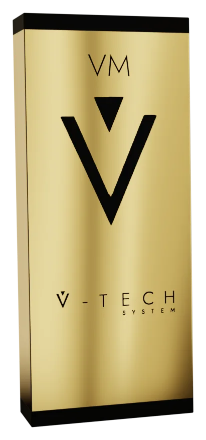
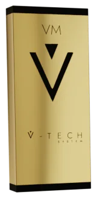

V-TECH FACEהתחדשות הפניםמקצועי
אקסוזומים סינתטיים · ערכה מקצועית
V-TECH SYSTEM
התחדשות עורית ברמת הדרמיס

ערכה מקצועית מאיטליה המבוססת על אקסוזומים סינתטיים: אמפולות סרום ומסכת ג׳ל ללא שטיפה לפרוטוקולי המיקרונידלינג שלכם.
- ערכה מקצועית
- PDRN 2%
- אקסוזומים סינתטיים
- טכנולוגיה איטלקית
למה?
מיקרונידלינג פותח את הדלת

המיקרו-תעלות זמניות. מה שתחדירו דרכן קובע את התוצאה.
אינדיקציות
- סימני פוסט אקנה
- קמטים וקמטוטים
- עור עייף וחסר ברק
- אובדן אלסטיות